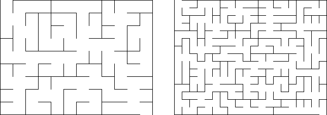

An $m \times n$ maze is an $m \times n$ rectangular grid with walls placed between grid cells such that there is exactly one path from the top-left square to any other square.
The following are examples of a $9 \times 12$ maze and a $15 \times 20$ maze:

Let $C(m,n)$ be the number of distinct $m \times n$ mazes. Mazes which can be formed by rotation and reflection from another maze are considered distinct.
It can be verified that $C(1,1) = 1$, $C(2,2) = 4$, $C(3,4) = 2415$, and $C(9,12) = 2.5720\mathrm e46$ (in scientific notation rounded to $5$ significant digits).
Find $C(100,500)$ and write your answer in scientific notation rounded to $5$ significant digits.
When giving your answer, use a lowercase e to separate mantissa and exponent. E.g. if the answer is $1234567891011$ then the answer format would be 1.2346e12.
solve(m=3, n=4) → ?solve(m=100, n=500) → ?solve(m=9, n=12) → ?